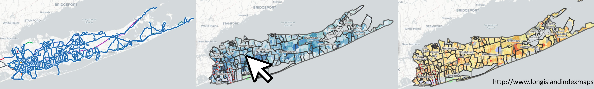

Maps That Matter: Exploring Inequality and Place with Code
First Year Seminar: GEN 110-025 - Fall 2024
4 credits
Key words: spatial justice, computer programming, critical cartography, python, US census, CS0
Description

In this course, we will ask questions about digitally-mediated mapping - how it shapes and can reshape our understanding of our lives, places, and communities. Using school segregation on Long Island and New York City as a case study, we will explore questions like:
- How do digitally-mediated maps shape our understanding of the world?
- How have history, culture, and inequality shaped place, space, and maps?
- How can we use technology to build new maps that embody new ways of thinking about our communities?
This first-year seminar is also designed to acclimatize you to academic life at the university. We will explicitly practice reading texts critically, writing about our ideas in a scholarly conversation, designing new projects that reflect intentional thought, and utilizing university resources.
Course Goals
 The students will be able to:
The students will be able to:
Engage in an academic conversation generally.
-
By reading critically, recognizing and understanding the underlying questions, implications, connections, and significance of ideas and information in college-level texts (literary and new media)
-
By articulating and expressing their own beliefs and arguments in writing, orally, and in design
Demonstrate responsible computational skills with respect to digitally-mediated maps by: Exploring maps as texts and data, understanding the data processing, narrative, and social, cultural, and political history that underlie digital map representations. Using basic coding and technologies to create a digital map that reflects an issue of interest to them.
Class Information
Instructors:
- Dr. Suraj Uttamchandani, <suttamchandani@adelphi.edu >
- Dr. Matthew X. Curinga, mcuringa@adelphi.edu
Class dates: 8/26/24 - 12/17/24
Class meetings: MW 2:25 pm - 03:40 pm
Office hours:
- Tuesday 3pm-5pm, Brooklyn Campus
- office hours by appointment
Class roster: google docs
Required Textbook
There is no required textbook for this course. Course readings will be made available through this course website.
Class Schedule
| Module | Date | Topic | Section 1 | Section 2 |
|---|---|---|---|---|
| 1 | Jan 28 | Robotics, Creativity, & Roots of Maker Education | Jan 28 | Feb 4 |
| 2 | Feb 11 | Mushrooms and Deconstructing Instructional Frameworks | Feb 11 | Feb 11 |
| 3 | Feb 25 | Workshop Brainstorming | Feb 25 | Mar 4 |
| 4 | Mar 11 | Pitch | Mar 11 | Mar 18 |
| 5 | Mar 25 | Workshop Critique | Mar 25 | Apr 1 |
| 6 | Apr 8 | Studio Session | Apr 8 | Apr 15 |
| 7 | Apr 29 | Workshop Rehearsal | Apr 29 | May 6 |
| 8 | May 13 | Conference | May 13 | May 13 |
This course is organized into 8 2-week modules. Each module consists of an in-person meeting in the Maker Lab and an online week. If you are in section 001 you will meet in person for the section 1 dates, above. Likewise for section 002.
Everyone will meet for a final public conference on May 13.
This is a hybrid course with some in-person meetings and some online meetings. Mostly, we will meet in-person every other week, but see the schedule above for details. Online weeks will be oriented around completing course readings and working independently or in teams on assignments. There will not be synchronous Zoom meetings for online weeks.
In-person classes will feature discussions of course readings, group working sessions, and maker lab activities. Towards the end of the term we will focus on developing your STEAM workshops.
You must complete the readings for the current module before your the in-person meeting for your section.
Class Meetings
Module 1: Roots & Robots (Jan 28 - Feb 4)
In our first 2 weeks we will read and talk about the roots of maker and STEAM education, and reflect on the goals of maker ed while advancing our own skills in with the tools of the maker lab using LEGO Robotics. Mindstorm robots are the direct descendent of Seymour Papert’s groundbreaking Constructionist research at MIT, beginning with the LOGO programming language and LOGO Turtle.

Seymour Papert presenting his LOGO Turtle robot via Wikimedia
{kind=link}
Readings (before class)
- Papert, S. (1999, March 29). Child Psychologist Jean Piaget. Time.
- Valente, J. A., & Blikstein, P. (2019). Maker Education: Where Is the Knowledge Construction? Constructivist Foundations, 14(3), Article 3.
- (optional) Resnick, M., Ocko, S., & Papert, S. (1988). Lego, Logo, and Design. Children’s Environments Quarterly, 5(4), 14–18.
- FIRST LEGO League (Director). (2021, October 5). About FIRST LEGO League [Video recording] [03:45].
- Nickolaus Hines. (2022, October 10). 10 Brilliant Rube Goldberg Machine Examples. Cool Material. (check out some of the videos in preparation for our lab)
Agenda
- Introductions
- About the School Lab
- Discuss Readings
- Intro to LEGO robotics
- Rube Goldberg LEGO Lab [details]
- Lab Demo
Module 2: Mycelium and Deconstructing Instructional Frameworks (Feb 11 - Feb 11)
Note: both sections meet on Feb 11!
In this session we will discuss how to design lessons for professional development and how to become a leader in your school. We will complete a lab that explores biological rather than mechanical/digital making. Slide Deck
 Mycelium Art from Musée Magazine
Mycelium Art from Musée Magazine
Readings due
- Martinez, S. L., & Stager, G. (2019). Teaching (Chapter 5) in Invent to learn: Making, tinkering, and engineering in the classroom. Constructing Modern Knowledge Press.
- Loeng, S. (2023). Pedagogy and andragogy in comparison – Conceptions and perspectives. Andragoška spoznanja/Studies in Adult Education and Learning, 1(1-14).
- Birman, B. F., Desimone, L., Porter, A. C., & Garet, M. S. (2000). Designing professional development that works. Educational Leadership, 57(8), 28-33
Resources
Agenda
- Deconstructing a TedTalk: What Makes a TedTalk so Inviting?
- Reading Discussion and synthesizing an instructional framework for adult learning
- Sign up for article presentations [google docs]
- Lab Demo: Grow Bio
Module 3: Play, Creativity, & Workshop Brainstorming (Feb 25 - March 4)
The success of this course depends on each class member developing new skills, and iterating many times over their workshop ideas until they are polished enough for a public demonstration. The readings for this session focus on creativity and play, and we will actively work on exercising our own creativity and work to design playful learning experiences. In this session we will think about the creative process, help set our own learning goals for the semester, and get ready to make a pitch for an extraordinary workshop.
Readings due
- Gallup. (2020). Creativity in learning: Understand the value of creativity in learning and how to enable it in the classroom by leveraging the full potential of technology. Gallup.
- Blikstein, P., & Worsley, M. (2016). Children are not hackers. In K. Peppler, E. Halverson, & Y. B. Kafai (Eds.), Makeology: Makerspaces as Learning Environments. Routledge.
- Wilson, H. E., Song, H., Johnson, J., Presley, L., & Olson, K. (2021). Effects of transdisciplinary STEAM lessons on student critical and creative thinking. [AU link] The Journal of Educational Research, 114(5), 445–457.
Module 4: STEAM & School Culture, Pitches (Feb 11 - Feb 24)
In this module we discuss how STEAM and Maker Education fits in with movements to change and advance school-based learning. In addition, we will hear formal pitches from everyone for their final workshop (see details below).
Readings due
- Papert, S. (1997). Why School Reform is Impossible. [AU link] The Journal of the Learning Sciences, 6(4), 417–427.
- Godhe, A.-L., Lilja, P., & Selwyn, N. (2019). Making sense of making: Critical issues in the integration of maker education into schools. Technology, Pedagogy and Education, 28(3), 317–328.
- Bullock, E. (2017). Only STEM Can Save Us? Examining Race, Place, and STEM Education as Property. Educational Studies, 53(6), 628–641.
Agenda
- Reading Discussion
- Pitches
Module 5: Workshop Critique (March 25 - April 1)
In this session pairs will present their proposed workshop and run a demo of the core component(s). They will receive feedback from the class and instructors.
After considering this feedback, the final draft of their workshop as well as their material list and budget are due.
Readings due
- Student readings 1 (TBD)
Module 6: Workshop Studio (Mar 11 - Mar 18)
This will be a full lab, working session to prepare materials and methods for the full rehearsal and final show.
Readings due
- [student readings 2]
Agenda
- Reading Discussion
- Lab work on workshops
Module 7: Workshop Rehearsal (April 29 - May 6)
This is the final run through of the demo. Each team will run their workshop for a group of students and instructors. All materials must be 100% ready for this demo. Teams will have the opportunity to refine their workshop based on the experience.
Module 8: Mini-Conference May 13
The mini-conference will be held on the 7th floor of Adelphi-St. Francis, from 5pm-8pm. Students from both sections must attend on May 13. You should plan to be on campus by 4:30 on May 13 in order to prepare your materials.
- schedule (TBD)
- friends, family, and colleagues welcome (sign-up TBD)
Grading & Assignments
| Assignment | Points |
|---|---|
| Participation & Attendance | 15 |
| Article presentation | 15 |
| Pitch | 15 |
| Critique | 15 |
| Demo | 15 |
| Final Presentation | 25 |
Submitting portfolio assignments
Everyone should have an online portfolio that they began in Maker 1: Design Lab. If you do not, you can create a new one in Google Sites. See assignment details for what you should submit in your portfolio.
Participation & attendance
One of the tenets of this class is that learning is more vibrant when we work on it together. Collectively, we will work to develop new understandings of the potential and challenges of maker education. In our labs, we will work to design and test new curricular projects. This cannot happen if you do not attend class, are not prepared, or arrive late.
You will be given two participation grades, and each time it will be the average of the instructor’s assessment and your self-assessment. The self-assessment is straightforward, you will assign a numeric grade (0-15 for participation 1, 0-10 for participation 2) and a brief statement explaining your criteria. Your criteria will not exactly match my criteria, as we all value different aspects of learning. Here are the things I am looking for:
- Preparation: You have completed the assigned readings and are ready to discuss them.
- Respect: You are actively engaged in the class discussion and activities, including listening to others and sharing your own ideas. In team projects, you respect deadlines and meeting times, and don’t add to the stress and workload of your teammates.
- Risk taking: In some ways, deep learning is always uncomfortable. Full participation means you are willing to take risks and make mistakes. It also means that you go beyond the minimum requirements and shared materials to help us push boundaries together. You will approach projects with an open mind and try to recognize your own biases and preconceptions.
- Attendance is required for all in person classes. The only excused absences are in keeping with the University’s policy: illness or other documented emergency.
- Work/school obligations are not an excuse for absence or lateness. This includes any coaching, club, professional development, proctoring, or other obligations.
- Attendance grading:
- for each lateness less than 10 minutes you will lose 1 point on your final grade
- for each absence or lateness more than 10 minutes you will lose 2 points on your final grade
- if you miss more than 3 of the total 8 in person classes, you may be asked to withdraw and repeat this course
- The final “mini conference” on Tuesday May 13 is absolutely mandatory. Please make any arrangements necessary to be present for this meeting.

Article Presentation
The first four modules have instructor assigned readings. The next 3 modules will have student assigned readings. Working with a partner, you will choose an academic article related to our course topics and assign it for reading. Your team will be responsible for leading a discussion on the article your assigned. You will be graded on a portfolio entry where you indicate the following:
- why you chose the article and its relevance
- a summary of the article and discussion of how it related to the course
- notes/questions for leading the discussion
- a reflection on the article and discussion to the class
- each team member will complete the portfolio portion independently

STEAM Workshop
The major outcome of this studio course is the professional development STEAM workshop that you create with your partner. This will be developed in several stages:
- Pitch: everyone pitches their own workshop idea. Only after your pitch is approved by the instructors can it be considered for a final workshop.
- Critique: you and your partner will present a more fleshed out concept for a workshop to the class and instructors for feedback. You will demonstrate/prototype core aspects of the lesson.
- Demo: you and your partner will do a full demonstration of your workshop prior to the public conference. All materials and procedures should be ready for this demo. You will be able to fine-tune your workshop after the demo.
- Public presentation: you present your workshop at the STEAM mini-confernce to an audience of peers, faculty, professional colleagues, and NYC high school guests.
The course culminates in a public mini-conference where you will lead a 60 minute workshop with one teammate. The audience for the conference will be STEM teachers (your peers and others like you), Adelphi faculty and staff, MIXI alums, friends from the doctoral program in education at Fordham University, and high school students invited to attend.
Workshop requirements:
- demonstrate a deep knowledge of one of the techniques of the maker lab and steam education
- address a hard pedagogical problem, related to your academic subject (i.e. aligns with standards and goals of the field) Explicitly identify where this workshop could “fit” in the grades 7-12 curriculum
- design a workshop that is engaging and effective at meeting your goals
- organize and present an effective session applying the principles of learning

Workshop Pitch
Although this is a pair project, everyone will design their own workshop pitch. The pitch will be a 5 minute presentation where you share your idea for a great workshop. After hearing and discussing all of the pitches, we will form teams of 2.
For the pitch, focus on:
- why your idea is innovative and creative
- the hard problem it addresses in your field
- where this type of learning could take place in your curriculum (be specific)
- that it is feasible and good match for your skills, our facilities, and the time/budget restrictions
In your portfolio:
- write a brief (300 word) pitch for your workshop
- link or embed any presentations materials you created
- reflect on the pitch based on feedback from the class/instructors
Critique
For the critique, your team will present the first draft of your lesson. This will not be the full 45 minute session, but you will walk us through the key aspects of your workshop. For items that are not ready (because they need to be built or ordered), we can role play and use low fidelity prototypes.
In your portfolio: (after the critique)
- submit a revised plan for your workshop
- a complete list of materials
- indicate what you will be using that is on-hand in the lab
- a list of materials to order with the quantity, cost, and link to where to purchase
- a total budget for materials
Demo
The demo is a rehearsal for your live presentation. You must have all materials prepared and ready. You will lead the demo the same as you will the live conference presentation.
In your portfolio: (after the demo)
- final lesson plan for the workshop
- final workshop title and abstract
- reflection on changes/refinements and outstanding items
- photos/videos/artifacts documenting your demo workshop
Workshop
You will present your workshop and be observed by course instructors and other Adelphi faculty, school partners, K12 students, Fordham doctoral students and other guests who attend. In addition to the quality of your lesson and the materials your produce, we are evaluating you on the effectiveness of your presentation and ability to perform as an instructional leader and coach.